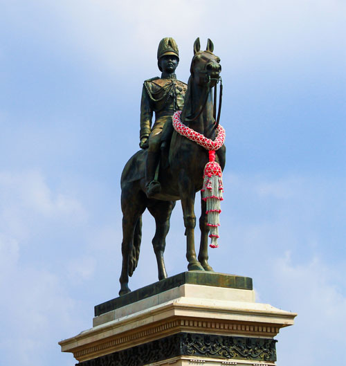

วันปิยมหาราช
วันที่: 23 ตุลาคม ของทุกปี
ความสำคัญ: วันปิยมหาราชเป็นวันที่ระลึกถึงพระบาทสมเด็จพระจุลจอมเกล้าเจ้าอยู่หัว รัชกาลที่ 5 ซึ่งเป็นกษัตริย์ที่มีบทบาทสำคัญในการพัฒนาประเทศไทย
ประวัติความเป็นมา
ต่อมาในรัชสมัยของพระบาทสมเด็จพระมงกุฎเกล้าเจ้าอยู่หัว รัชกาลที่ 6 ทางราชการได้ประกาศให้วันที่ 23 ตุลาคม ซึ่งเป็นวันสวรรคตของพระบาทสมเด็จพระจุลจอมเกล้าเจ้าอยู่หัว เป็นวันที่ระลึกสำคัญของชาติ เรียกว่า "วันปิยมหาราช" และกำหนดให้เป็นวันหยุดราชการ
เจ้าหน้าที่กระทรวงมหาดไทย ซึ่งต่อมาเป็น "กรุงเทพมหานคร" ร่วมด้วยกระทรวงวัง ซึ่งต่อมาเป็น "สำนักพระราชวัง" ได้จัดตกแต่งพระบรมราชานุสาวรีย์ ตั้งราชวัติฉัตร 5 ชั้น ประดับโคมไฟ ทอดเครื่องราชสักการะที่หน้าพระบรมราชานุสาวรีย์ตั้งแต่นั้นมาจนถึงปัจจุบัน
พระราชพิธีทรงบำเพ็ญพระราชกุศล วันปิยมหาราช ครั้งแรกเกิดขึ้นถัดจากปีที่ได้ถวายพระเพลิงพระบรมศพพระบาทสมเด็จพระจุลจอมเกล้าเจ้าอยู่หัว โดยพระบาทสมเด็จพระมงกุฎเกล้าเจ้าอยู่หัวทรงบำเพ็ญพระราชกุศลทักษิณานุปทานถวายแล้วเสด็จฯ ไปวางพวงมาลา ทรงจุดธูปเทียนเครื่องราชสักการะที่พระบรมราชานุสาวรีย์
พระราชประวัติพระบาทสมเด็จพระจุลจอมเกล้าเจ้าอยู่หัว
พระบาทสมเด็จพระจุลจอมเกล้าเจ้าอยู่หัว มีพระนามเดิมว่า สมเด็จเจ้าฟ้าจุฬาลงกรณ์ พระบรมราชสมภพเมื่อวันที่ 20 กันยายน พ.ศ. 2396 เป็นพระราชโอรสองค์ที่ 4 ในพระบาทสมเด็จพระจอมเกล้าเจ้าอยู่หัว และพระนางเจ้ารำเพยภมราภิรมย์ (สมเด็จพระเทพศิรินทราบรมราชินี) เมื่อพระชนมายุได้ 9 พรรษา ทรงได้รับสถาปนาขึ้นเป็น "กรมหมื่นพิฆเนศวรสุรสังกาศ" ต่อมาเมื่อพระชนมายุได้ 13 พรรษา ทรงได้รับสถาปนาขึ้นเป็น "กรมขุนพินิตประชานาถ" จากนั้นได้ขึ้นครองราชย์เมื่อวันที่ 1 ตุลาคม พ.ศ. 2411 และบรมราชาภิเษกครั้งแรกเมื่อวันที่ 11 พฤศจิกายน พ.ศ. 2411 ทรงพระนามว่า "พระบาทสมเด็จพระปรมินทรมหาจุฬาลงกรณ์ พระจุลจอมเกล้าเจ้าอยู่หัว"
เนื่องจากขณะนั้นมีพระชันษาเพียง 16 ปี ยังไม่ทรงบรรลุนิติภาวะ สมเด็จพระยาบรมมหาศรีสุริยวงศ์ (ช่วง บุนนาค) จึงเป็นผู้สำเร็จราชการแผ่นดิน และสถาปนากรมหมื่นบวรวิไชยชาญ พระโอรสองค์ใหญ่ของพระบาทสมเด็จพระปิ่นเกล้าเจ้าอยู่หัว เป็นกรมพระราชวังบวรวิชัยชาญพระมหาอุปราช
ระหว่างที่สมเด็จพระยาบรมมหาศรีสุริยวงศ์เป็นผู้สำเร็จราชการอยู่นั้น สมเด็จพระจุลจอมเกล้าเจ้าอยู่หัวทรงใช้เวลาศึกษาเล่าเรียนศิลปวิทยาเป็นอันมาก เช่น โบราณราชประเพณี รัฐประศาสน์ โบราณคดี ภาษาบาลี ภาษาอังกฤษ วิชาปืนไฟ วิชามวยปล้ำ วิชากระบี่กระบอง และวิชาวิศวกรรม
ในตอนนี้ยังได้เสด็จประพาสสิงคโปร์และชวา 2 ครั้ง เสด็จประพาสอินเดีย 1 ครั้ง การเสด็จประพาสนี้มิใช่เพื่อสำราญพระราชหฤทัย แต่เพื่อทอดพระเนตรแบบแผนการปกครองที่ชาวยุโรปนำมาใช้ปกครองเมืองขึ้นของตน เพื่อจะได้นำมาแก้ไขการปกครองของไทยให้เหมาะสมแก่สมัยยิ่งขึ้น ตลอดจนการแต่งตัว การตัดผม การเข้าเฝ้าฯ ในพระราชฐานก็ใช้ยืนและนั่งตามโอกาสสมควร ไม่จำเป็นต้องหมอบคลานเหมือนแต่ก่อน
เมื่อพระชนมพรรษาบรรลุพระราชนิติภาวะ ได้ผนวชเป็นเวลา 2 สัปดาห์ แล้วจึงประกอบพระราชพิธีบรมราชาภิเษกเป็นครั้งที่ 2 เมื่อวันที่ 15 พฤศจิกายน พ.ศ. 2416 และนับจากนั้นมาก็มีพระราชอำนาจเด็ดขาดในการบริหารราชการแผ่นดิน
ตลอดระยะเวลาที่ทรงครองสิริราชสมบัติ ทรงปกครองทำนุบำรุงพระราชอาณาจักรให้มั่งคั่งสมบูรณ์ ดัวยรัฐสมบัติ พิทักษ์พสกนิกรให้อยู่เย็นเป็นสุข บำบัดภัยอันตรายทั้งภายในภายนอกประเทศ ทรงบำเพ็ญพระราชกรณียกิจต่าง ๆ อันก่อให้เกิดคุณประโยชน์แก่ประเทศชาติ ให้รอดพ้นจากวิกฤตการณ์ และสามารถธำรงเอกราชไว้ตราบจนทุกวันนี้
พระบาทสมเด็จพระจุลจอมเกล้าเจ้าอยู่หัวสวรรคตเมื่อวันที่ 23 ตุลาคม พ.ศ. 2453 รวมพระชนมพรรษา 58 พรรษา ครองราชสมบัตินานถึง 42 ปี
พระราชกรณียกิจพระบาทสมเด็จพระจุลจอมเกล้าเจ้าอยู่หัว
1. การเลิกทาส
เป็นพระราชกรณียกิจอันสำคัญยิ่งที่ทำให้พระองค์ทรงได้รับพระสมัญญาว่า "สมเด็จพระปิยมหาราช" ด้วยพระองค์ทรงเห็นว่ามีทาสในแผ่นดินเป็นจำนวนมาก และลูกทาสในเรือนเบี้ยจะสืบต่อการเป็นทาสไปจนรุ่นลูกรุ่นหลานอย่างไม่มีที่สิ้นสุด ถ้าไม่มีเงินมาไถ่ตัวเองแล้วต้องเป็นทาสไปตลอดชีวิต พระองค์จึงมีพระราชหฤทัยแน่วแน่ว่าจะต้องเลิกทาสให้สำเร็จ แม้จะเป็นเรื่องยากลำบาก เพราะทาสมีมาตั้งแต่สมัยโบราณ อีกทั้งเจ้านายที่เป็นใหญ่ในสมัยนั้นมักมีข้ารับใช้ เมื่อไม่มีทาส บุคคลเหล่านี้อาจจะไม่พอใจและก่อให้เกิดความวุ่นวายขึ้นเหมือนกับที่เกิดขึ้นในต่างประเทศมาแล้ว
พระบาทสมเด็จพระจุลจอมเกล้าเจ้าอยู่หัวจึงตราพระราชบัญญัติขึ้น เมื่อวันที่ 21 สิงหาคม พ.ศ. 2417 ให้มีผลย้อนหลังไปถึงปีที่พระองค์เสด็จขึ้นเสวยราชสมบัติ มีบัญญัติว่า ลูกทาสซึ่งเกิดเมื่อปีมะโรง พ.ศ. 2411 ให้มีสิทธิ์ได้ลดค่าตัวทุกปี และพอครบอายุ 21 ปี ให้ขาดจากความเป็นทาสทั้งชายและหญิง จากนั้นใน พ.ศ. 2448 จึงได้ออกพระราชบัญญัติเลิกทาสที่แท้จริงขึ้น เรียกว่า "พระราชบัญญัติทาส ร.ศ. 124" (พ.ศ. 2448) เลิกลูกทาสในเรือนเบี้ยอย่างเด็ดขาด เด็กที่เกิดจากทาส ไม่ต้องเป็นทาสอีกต่อไป และการซื้อ-ขายทาสเป็นโทษทางอาญา ส่วนผู้ที่เป็นทาสอยู่แล้วให้นายเงินลดค่าตัวให้เดือนละ 4 บาท จนกว่าจะหมด
ด้วยพระปรีชาสามารถของพระองค์ท่าน ในเวลาเพียง 30 ปีเศษ ทาสในเมืองไทยก็หมดไปโดยไม่เกิดการนองเลือดเหมือนกับประเทศอื่น ๆ
2. การปฏิรูประบบราชการ
ในสมัยพระบาทสมเด็จพระจุลจอมเกล้าเจ้าอยู่หัว ได้ทรงพระกรุณาโปรดเกล้าฯ ให้ตราระเบียบการปกครองขึ้นใหม่ แยกหน่วยราชการออกเป็นกรมกองต่าง ๆ มีหน้าที่รับผิดชอบเฉพาะไม่ก้าวก่ายกัน จากเดิมมี 6 กระทรวง คือ กระทรวงมหาดไทย, กระทรวงกลาโหม, กระทรวงนครบาล, กระทรวงวัง, กระทรวงการคลัง และกระทรวงเกษตราธิการ ได้เพิ่มอีก 4 กระทรวง รวมเป็น 10 กระทรวง ได้แก่ กระทรวงธรรมการ มีหน้าที่ดูแลเกี่ยวกับกิจการของพระสงฆ์ และการศึกษา, กระทรวงยุติธรรม มีหน้าที่ดูแลเกี่ยวกับคดีความที่ต้องตัดสินต่าง ๆ, กระทรวงโยธาธิการ มีหน้าที่ดูแลตรวจตราการก่อสร้าง การทำถนน ขุดลอกคูคลอง งานที่เกี่ยวกับการก่อสร้าง และกระทรวงการต่างประเทศ มีหน้าที่ดูแลงานที่เกี่ยวข้องกับการต่างประเทศ
3. การสาธารณูปโภค
การประปา ทรงให้กักเก็บน้ำจากแม่น้ำเชียงรากน้อย จังหวัดปทุมธานี และขุดคลองเพื่อส่งน้ำเข้ามายังสามเสน พร้อมทั้งฝังท่อเอกติดตั้งอุปกรณ์สำหรับการทำน้ำประปาขึ้นในเดือนกรกฎาคม พ.ศ. 2452
การคมนาคม วันที่ 9 มีนาคม พ.ศ. 2434 พระบาทสมเด็จพระจุลจอมเกล้าเจ้าอยู่หัวได้เสด็จพระราชดำเนินไปขุดดินก่อพระฤกษ์ เพื่อประเดิมการสร้างทางรถไฟไปนครราชสีมา แต่ทรงเปิดทางรถไฟกรุงเทพฯ-พระนครศรีอยุธยา ก่อน จึงนับว่าเส้นทางรถไฟสายนี้เป็นทางรถไฟแห่งแรกของไทย
นอกจากนี้ได้โปรดเกล้าฯ ให้สร้างสะพานและถนนอีกมากมาย คือ ถนนเยาวราช ถนนราชดำเนินกลาง ถนนราชดำเนินนอก ถนนดินสอ ถนนบูรพา ถนนอุณากรรณ เป็นต้น และโปรดเกล้าฯ ให้ขุดคลองต่าง ๆ เพื่อใช้เป็นแนวทางคมนาคมและส่งเสริมการเพาะปลูก
การสาธารณสุข เนื่องจากการรักษาแบบยากลางบ้านไม่สามารถช่วยคนได้อย่างทันท่วงที จึงพระราชทานพระราชทรัพย์ส่วนพระองค์จำนวน 200 ชั่ง โปรดเกล้าฯ ให้สร้างโรงพยาบาลวังหลัง ต่อมาได้เปลี่ยนชื่อเป็น "โรงพยาบาลศิริราช" เปิดทำการรักษาประชาชนเป็นครั้งแรกเมื่อวันที่ 26 เมษายน พ.ศ. 2431
การไฟฟ้า พระองค์ทรงมอบหมายให้กรมหมื่นไวยวรนาถเป็นแม่งานในการก่อสร้างโรงไฟฟ้า เพื่อผลิตกระแสไฟฟ้า และสามารถจ่ายกระแสไฟฟ้าให้กับประชาชนครั้งแรกเมื่อปี พ.ศ. 2433
การไปรษณีย์ โปรดให้เริ่มจัดขึ้นในปี พ.ศ. 2424 รวมอยู่ในกรมโทรเลข ซึ่งได้จัดขึ้นตั้งแต่ พ.ศ. 2412 โดยโทรเลขสายแรกคือ ระหว่างจังหวัดพระนคร (กรุงเทพมหานคร) กับจังหวัดสมุทรปราการ
4. การเสด็จประพาส
การเสด็จประพาสเป็นพระราชกรณียกิจที่สำคัญอย่างหนึ่งของพระบาทสมเด็จพระจุลจอมเกล้าเจ้าอยู่หัว โดยหลังจากเกิดกรณีพิพาทกับฝรั่งเศสแล้วก็ได้เสด็จประพาสยุโรป 2 ครั้ง ในปี พ.ศ. 2440 ครั้งหนึ่ง และในปี พ.ศ. 2450 อีกครั้งหนึ่ง ทั้งนี้ เพื่อเชื่อมสัมพันธไมตรีกับประเทศต่าง ๆ ในยุโรป ตลอดจนประเทศฝรั่งเศสด้วย อีกทั้งยังได้ทรงเลือกสรรเอาแบบแผนขนบธรรมเนียมอันดีในดินแดนเหล่านั้นมาปรับปรุงในประเทศให้เจริญขึ้น
ในการเสด็จประพาสครั้งแรกนี้ได้มีพระราชหัตถเลขาตลอดระยะทางถึงสมเด็จพระนางเจ้าเสาวภาผ่องศรีพระบรมราชินีนาถ (ซึ่งต่อมาได้รับสถาปนาเป็น สมเด็จพระศรีพัชรินทราบรมราชินีนาถ) ผู้สำเร็จราชการแผ่นดิน พระราชหัตถเลขานี้ต่อมาได้รวมเป็นหนังสือเล่มชื่อ "พระราชนิพนธ์เรื่องไกลบ้าน" ให้ความรู้มากมายเกี่ยวกับสถานที่ต่าง ๆ ที่เสด็จฯ
ส่วนภายในประเทศ ทรงถือว่าการเสด็จประพาสในที่ต่าง ๆ เป็นการตรวจตราสารทุกข์สุกดิบของราษฎรได้เป็นอย่างดี พระองค์จึงได้ทรงปลอมแปลงพระองค์ไปกับเจ้านายและข้าราชการ โดยเสด็จฯ ทางเรือมาดแจวไปตามแม่น้ำลำคลองต่าง ๆ เพื่อแวะเยี่ยมเยียนตามบ้านราษฎร ซึ่งเรียกกันว่า "ประพาสต้น" ซึ่งได้เสด็จฯ 2 ครั้ง คือในปี พ.ศ. 2447 และในปี พ.ศ. 2449 อีกครั้งหนึ่ง
5. การศึกษา
พระบาทสมเด็จพระจุลจอมเกล้าเจ้าอยู่หัวทรงเห็นความสำคัญของการศึกษา จึงโปรดเกล้าฯ ให้สร้างโรงเรียนหลวงขึ้นในพระบรมมหาราชวัง คือ "โรงเรียนนายทหารมหาดเล็ก" ก่อนจะเปลี่ยนชื่อเป็น "โรงเรียนพระตำหนักสวนกุหลาบ" ต่อมาโปรดให้ตั้งโรงเรียนหลวงสำหรับราษฎรขึ้นเป็นแห่งแรก คือ "โรงเรียนวัดมหรรณพาราม" และในที่สุดได้โปรดเกล้าฯ ให้จัดตั้งกระทรวงธรรมการขึ้นเมื่อปี พ.ศ. 2435 (ปัจจุบันคือกระทรวงศึกษาธิการ) เพื่อดูแลเรื่องการศึกษาและการศาสนา
6. การปกป้องประเทศจากการสงครามและเสียดินแดน
เนื่องจากลัทธิจักรวรรดินิยมได้แผ่อิทธิพลเข้ามาตั้งแต่ปลายรัชกาลพระบาทสมเด็จพระจอมเกล้าเจ้าอยู่หัว พระบาทสมเด็จพระจุลจอมเกล้าเจ้าอยู่หัวทรงใช้พระปรีชาสามารถอย่างสุดพระกำลังที่จะรักษาประเทศชาติให้รอดพ้นจากวิกฤตการณ์ ถึงแม้ว่าจะต้องสูญเสียดินแดนบางส่วนไปก็ตาม โดยดินแดนที่ต้องเสียให้กับต่างชาติ ได้แก่
พ.ศ. 2431 เสียดินแดนในแคว้นสิบสองจุไทย
พ.ศ. 2436 เสียดินแดนฝั่งซ้ายของแม่น้ำโขงให้ฝรั่งเศส และฝรั่งเศสยึดเมืองจันทบุรีไว้
พ.ศ. 2447 เสียดินแดนฝั่งขวาของแม่น้ำโขงให้ฝรั่งเศส เพื่อแลกกับเมืองจันทบุรี แต่ฝรั่งเศสได้ยึดตราดไว้แทน
พ.ศ. 2449 เสียดินแดนที่เมืองพระตะบอง เสียมราฐ และศรีโสภณ ให้ฝรั่งเศส เพื่อแลกกับตราดและเกาะทั้งหลาย แต่การเสียดินแดนครั้งสุดท้ายนี้ไทยก็ได้ประโยชน์อยู่บ้าง คือ ฝรั่งเศสยอมยกเลิกสิทธิสภาพนอกอาณาเขต ยอมให้ศาลไทยมีสิทธิ์ที่จะชำระคดีใด ๆ ที่เกิดขึ้นแก่ชาวฝรั่งเศส ไม่ต้องไปขึ้นศาลกงสุลเหมือนแต่ก่อน
ส่วนทางด้านอังกฤษ ประเทศไทยได้เปิดการเจรจากับรัฐบาลอังกฤษ รวมถึงเรื่องสิทธิสภาพนอกอาณาเขตด้วย ใน พ.ศ. 2454 อังกฤษจึงยอมตกลงให้ชาวอังกฤษ หรือคนในบังคับอังกฤษ มาขึ้นศาลไทย และยอมให้ไทยกู้เงินจากอังกฤษ เพื่อนำมาใช้สร้างทางรถไฟสายใต้จากกรุงเทพฯ ถึงสิงคโปร์ เพื่อตอบแทนประโยชน์ที่อังกฤษเอื้อเฟื้อ ทางฝ่ายไทยยอมยกรัฐกลันตัน ตรังกานู และไทยบุรี ให้แก่สหรัฐมลายูของอังกฤษ